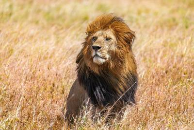

Depredadores
Los depredadores son todas y cada una de las especies que optan por un comportamiento de depredación como estrategia de supervivencia y método de alimentación. Un depredador puede ser también presa de otro mayor que él.
Animales Terrestres
Aqui encontraras 3 tipos de categoria para estos animales
Los depredadores son todas y cada una de las especies que optan por un comportamiento de depredación como estrategia de supervivencia y método de alimentación. Un depredador puede ser también presa de otro mayor que él.
Una presa es una especie animal que pueda ser cazada o atrapada de alguna manera por otra. El animal se convierte en presa en el marco de una relación conocida como depredación, en el cual el predador sale en busca de su presa para alimentarse.
Un animal doméstico es aquel que forma parte de una especie acostumbrada a vivir junto al ser humano. Por lo general, este tipo de animales son adoptados o comprados por las personas para que compartan la vida con ellas en la casa familiar.